地政学
グアムは米国領でありながら、西太平洋の前方拠点として基地、港、空港が集まる島です。中国、台湾、朝鮮半島、フィリピン海をめぐる緊張は、土地利用、雇用、防災、自治の議論に直結し、政治参加にも及びます。
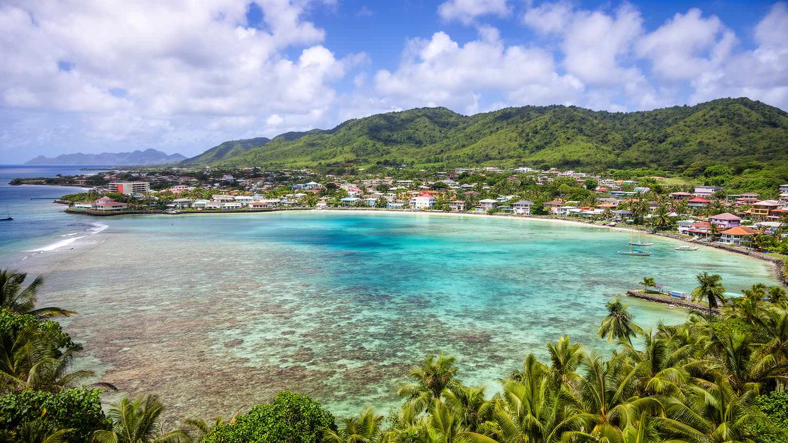
🇬🇺 グアム / 西太平洋 / World City Atlas
フィリピン海とマリアナ諸島の南端にある米国準州。チャモロの村、ハガニアの行政、タモン湾の観光、米軍基地、台風と珊瑚礁が、狭い島の生活圏で重なります。
島の骨格
グアムは都市名というより島全体の生活圏です。空港、港、基地、行政、観光ホテル、村落、珊瑚礁が短い移動距離に収まり、海の美しさと安全保障の緊張が同じ日常に現れます。
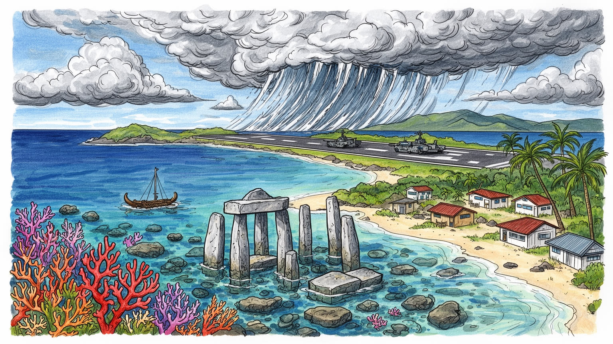
グアムは米国領でありながら、西太平洋の前方拠点として基地、港、空港が集まる島です。中国、台湾、朝鮮半島、フィリピン海をめぐる緊張は、土地利用、雇用、防災、自治の議論に直結し、政治参加にも及びます。
観光、米軍関連、建設、公共部門、港湾物流が島の雇用を支えます。ホテル清掃、介護、飲食、基地工事、台風復旧には移民労働も多く、賃金、住宅、物価、資格制度が暮らしを左右します。生活費の高さも焦点です。
チャモロの親族関係、カトリックの祭日、村のフィエスタ、スペイン統治と米国統治の記憶が重なります。先住民文化は観光商品ではなく、土地、言語、食、墓地、戦争記憶をめぐる権利の基盤で、現在の自治とも関わります。
タモン湾のリゾート、ショッピング、珊瑚礁、戦跡は訪問者を集めますが、住民には台風、電気水道、車依存、医療、住宅費、島外進学が日常の焦点です。観光の回復は暮らしの安定と結びつき、地域経済にも響きます。
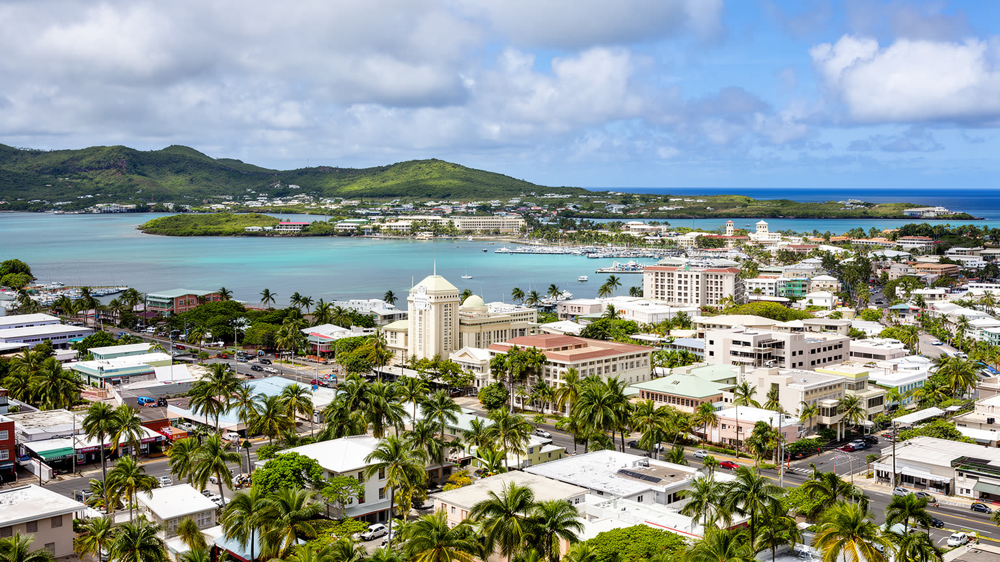
グアムを都市として読むとき、中心は巨大な都心ではなく、ハガニア、タムニン、デデド、バリガダ、アガニャハイツなどの集落と道路が作る島全体のネットワークです。ハガニアは行政首都で、政府機関、教会、広場、裁判所、記念碑が海に近い低地に集まりますが、人口と商業の重心はタモンやデデドへ広がっています。島は小さいため、職場、学校、親族、買い物、教会、ビーチが車で結ばれ、渋滞や燃料価格も生活の条件になります。米国の制度下にありながら大統領選挙の投票権や連邦議会での代表権には制限があり、自治と依存が同時に存在します。行政の建物を見れば、島の規模に比べて軍事、観光、災害対応、先住民権利、連邦補助が大きな比重を持つことが分かります。ハガニアは静かな中心ですが、そこには島の統治をめぐる複雑な力関係が凝縮されています。中心部の低地は台風や高潮の記憶も持ち、公共施設の配置は防災と復旧の難しさと切り離せません。古いスペイン広場、カトリック教会、戦争記念の場、官庁が近くに並ぶことで、統治の歴史が歩ける距離に現れます。島民にとって行政は遠い首都ではなく、道路の補修、電気水道、学校、医療、土地記録、連邦資金の配分として毎日の暮らしに触れる制度です。小さな首都ほど、制度と生活の距離は近くなります。だから中心を見ることは、島全体の不均衡を見る入口にもなります。
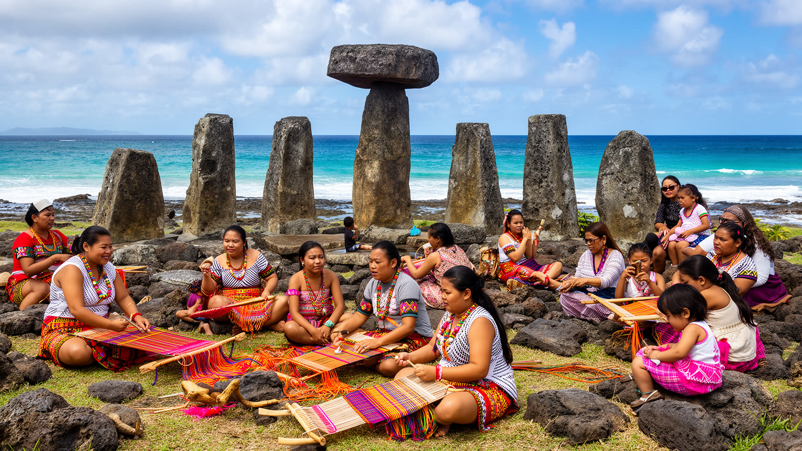
グアムの文化を観光の踊りや土産物だけで見ると、島の核心を見落とします。チャモロの人々にとって土地、海、墓地、親族、言語、食卓は、植民地化と戦争をくぐって残された生活の基盤です。スペイン統治はカトリック、村の祭日、姓、食文化に深い痕跡を残し、米国統治は学校、軍、英語、消費文化、移住の回路を強めました。家庭ではチャモロ語の継承が焦点になり、学校や公共行事では言語を回復する取り組みが広がります。レッドライス、ケラグエン、フィナデニ、魚料理、バーベキューは、観光客向けの味である前に親族が集まる食卓の記憶です。村のフィエスタや教会行事は、祈り、食事、互助を結びます。文化は保存対象ではなく、土地返還、教育、墓地保護、観光表現のあり方をめぐる現在の交渉でもあります。ラッテストーンや古い村の跡は、先住民の社会が外来統治より前からこの海域に根を張っていたことを示します。若い世代が英語中心の学校やデジタル文化の中で育つほど、家庭、歌、舞踊、航海、地名をどう受け継ぐかが重要になります。文化の再生は過去へ戻ることではなく、現在の政治参加と自尊感情を支える作業です。観光の舞台で短く演じられる文化と、家庭や墓地で守られる文化の間には緊張があります。外から来る人が島を理解するには、華やかな表現だけでなく、誰が語り、誰が利益を受け、どの土地の記憶が守られるのかを見る必要があります。
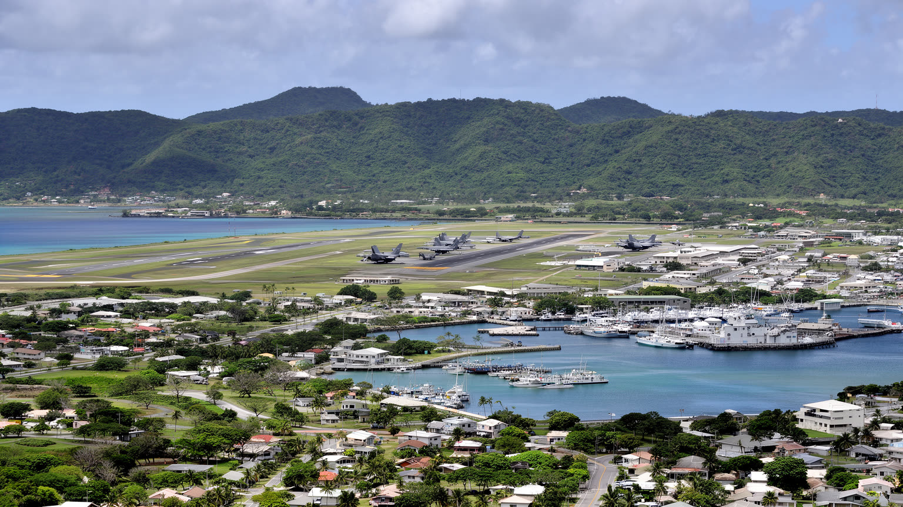
グアムは西太平洋の米軍拠点として、空軍基地、海軍基地、港、弾薬施設、訓練場、通信施設が島の土地利用に大きな影響を与えます。基地は雇用、建設、連邦支出をもたらし、ホテルやサービス業にも間接的な需要を作りますが、同時に土地の制約、環境負荷、騒音、交通、先住民の土地権をめぐる摩擦を生みます。アジアの安全保障環境が緊張すると、グアムは米国本土から遠い観光地ではなく、ミサイル防衛や補給の要として語られます。その語りは住民にとって抽象的な戦略ではなく、住宅地の近くを飛ぶ航空機、基地工事の労働需要、海岸や森の利用制限として現れます。軍事的な重要性は島の政治的発言力と必ずしも釣り合いません。グアムを読むには、守られる島という表現だけでなく、誰の土地が使われ、誰が危険を引き受けるのかを問う必要があります。基地再編は新しい道路、住宅、上下水、港湾能力を求め、民間の建設市場や労働市場にも波及します。軍人と家族の消費は地域経済を支えますが、短期滞在の人口が増えるほど医療、学校、交通、賃貸住宅への圧力も強まります。安全保障は島を外から利用する論理と、島で暮らす人の安全をどう両立させるかという難しさを伴います。基地に近い経済は不況時の支えになりますが、観光や地域産業の自立を弱める可能性もあります。島の未来を考えるには、軍事投資の規模だけでなく、土地回復、環境監視、住民説明、雇用の質を同じ重さで扱う必要があります。
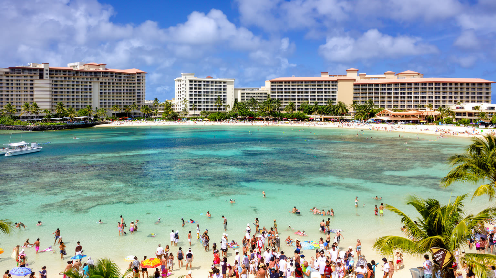
タモン湾はグアム観光の正面玄関です。白い砂浜、ホテル、免税店、レストラン、ショッピングモール、マリンアクティビティが短い範囲に集まり、日本、韓国、台湾、米国本土からの旅行者を受け入れてきました。観光は雇用と税収を支える一方、外部需要に弱く、感染症、台風、航空便、為替、地域の景気に左右されます。ホテルで働く清掃、調理、警備、送迎、販売の仕事は、観光客の快適さを見えないところで支えます。リゾートの海辺は開放的に見えますが、土地所有、海岸アクセス、珊瑚礁保全、廃水、混雑、賃金の問題も抱えます。観光が戻るほど物価や人手不足が強まり、住民向けの生活サービスと競合することがあります。タモンを歩くことは、南国の余暇だけでなく、島が外部の消費にどの程度依存しているかを読むことでもあります。観光客の国籍が変われば看板、メニュー、決済、航空路線、従業員の言語も変わります。短い滞在の楽しさを支えるために、島内では食材、洗濯、廃棄物、送迎、電力、水の需要が増えます。リゾート経済の成熟は、海を守り、働く人が住める賃金を保ち、住民がビーチを使い続けられるかで測られます。観光の成功はホテル稼働率だけでなく、台風後に地域社会が早く戻れるか、若い人が観光以外の進路も選べるかにも表れます。外からの余暇と島内の生活が衝突しない仕組みが必要です。
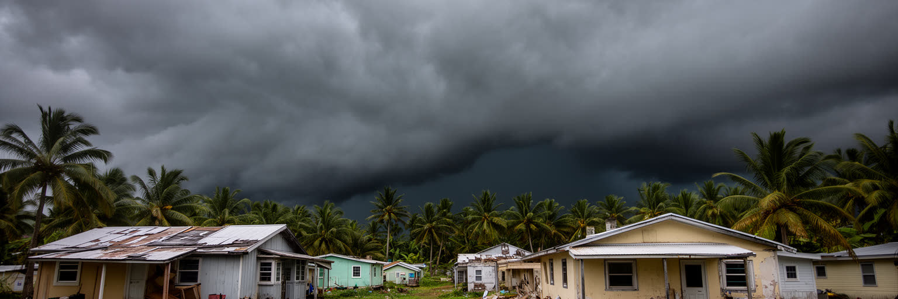
グアムの気候は熱帯海洋性で、乾季と雨季、貿易風、湿度、台風が暮らしを形作ります。晴れた海は観光の魅力ですが、強い台風が来れば屋根、電線、道路、港、空港、ホテル、学校、病院が一斉に試されます。島であるため資材や燃料の多くは外から届き、港や空港が止まると復旧の速度は限られます。コンクリート住宅、発電機、貯水、非常食、車の燃料、親族間の助け合いは日常的な備えです。気候変動は海面上昇、高潮、強雨、暑熱、珊瑚の白化を通じて、観光、漁業、軍事施設、住宅地を同時に揺さぶります。災害は自然だけの問題ではありません。低所得世帯、高齢者、移民労働者、障害者、車を持たない人ほど避難や復旧が難しくなります。グアムの強さは、台風後に島を立て直す共同体の力にも表れます。復旧の遅れは学校再開、病院の運営、観光予約、基地機能、家庭の収入へ連鎖します。発電所、送電線、浄水施設、携帯通信、港の荷役は、普段は見えにくい島の生命線です。気候への備えは防潮壁や避難所だけでなく、情報を多言語で届け、弱い立場の人を早く見つける地域の仕組みとして整える必要があります。暑さは屋外労働、学校、観光客の安全にも影響します。日陰、冷房、断水対策、医療体制を整えることは、南の島の快適さを守るだけでなく命を守る政策です。備えの質は、復旧後の暮らしの戻り方に表れます。
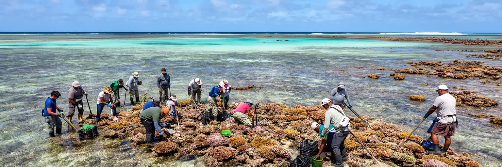
グアムの海は観光写真の背景である前に、食、遊び、信仰、記憶、防災を支える生活基盤です。珊瑚礁は波を弱め、魚のすみかを作り、シュノーケリングやダイビングの魅力を生みますが、白化、陸から流れる土砂、開発、下水、船舶、過剰利用に影響を受けます。南部の村では山と海が近く、雨が降ると赤土が海へ流れ込みやすくなります。沿岸を守ることは環境保護であると同時に、観光経済と村の食文化を守ることです。海へのアクセスも重要です。ホテル前のビーチ、軍用地、私有地、聖地、漁場が近接するため、誰が海へ入れるのかは公共性の問題になります。古い航海技術やアウトリガーカヌーの復興は、太平洋の島々との連続性を思い出させます。グアムの海を読むには、透明度だけでなく、陸の使い方、排水、軍事利用、先住民の知識まで一緒に見る必要があります。学校の環境教育、漁師の経験、研究者の調査、ホテルの排水管理は、同じ海を守る別々の入口です。海岸が崩れ、珊瑚が弱れば、観光だけでなく台風時の防護も失われます。水辺を保つことは、島の経済、記憶、食料、安全を一体で守ることです。浅瀬で遊ぶ子ども、祈りの場としての海、漁の知識、観光客の体験は同じ沿岸に重なります。海を公共財として扱えるかが、島の公平性を測ります。海岸管理は、未来の世代への約束でもあります。
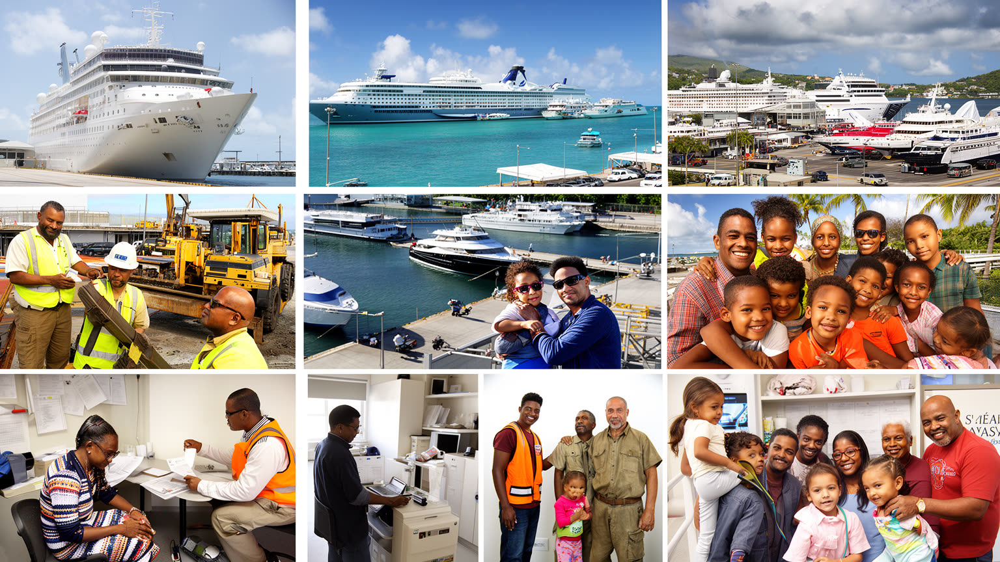
グアムの人口はチャモロ、フィリピン系、ミクロネシア諸島出身者、アジア系、米国本土出身者、軍関係者が重なります。観光、建設、医療、介護、飲食、小売、基地関連の仕事は、地域を越えて来た人々に支えられています。近隣の島々から来る人は、米国との自由連合や家族の移動、教育、医療、雇用を求めてグアムへ集まりますが、住居、差別、学校での言語、医療費、法的手続きに直面します。建設ブームや基地再編では一時的な労働需要が高まり、宿舎や安全管理も課題になります。島の物価は高く、住宅は限られ、車がなければ移動も難しいため、低賃金の仕事ほど生活負担が重くなります。多文化性は観光向けの明るい言葉だけではありません。教室、病院、職場、教会、店舗で、言語と制度をどう調整するかという毎日の作業です。移民労働者は島を支える一方、災害時には情報不足や雇用不安にさらされやすくなります。子どもたちは複数の言語と文化を行き来し、学校は学力支援だけでなく家庭との通訳も担います。グアムの労働を読むには、観光統計や基地投資額だけでなく、誰が深夜に働き、誰が家族へ送金し、誰が島に残れるのかを見る必要があります。移動の島であることは、別れと帰郷が多いことでもあります。人の出入りを前提に、住宅、教育、医療、労働保護を整えられるかが、島社会の安定を左右します。
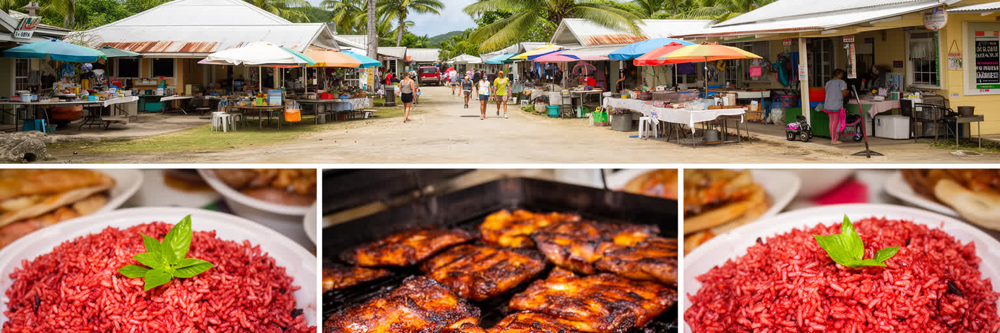
グアムの日常は、リゾートの外にある村の道、学校、教会、ガソリンスタンド、家庭の台所、週末の集まりにあります。チャモロ料理は、米、鶏、魚、ココナツ、レモン、唐辛子、醤油、スペイン系やフィリピン系の味を取り込みながら、親族の集まりを支えます。フィエスタでは大量の料理を分け合い、家族と近所が顔を合わせます。食は文化の展示ではなく、互助の実践です。一方で輸入食品への依存、物価高、糖尿病などの健康問題、農地の制約も島の食卓に影響します。車社会のため、買い物や通院は距離以上に交通手段で差が出ます。若者は島外の大学や仕事へ向かい、戻るかどうかを迷います。村の生活を読むと、グアムが観光地である前に、親族、教会、学校、道路、台風への備えによって毎日維持される生活の島であることが見えてきます。村ごとの祭りや葬儀は、親族の広がりを確認し、離れて住む人を呼び戻す機会にもなります。家の庭、屋外の調理、持ち寄り料理、教会の準備は、現金収入だけでは測れない暮らしの豊かさです。同時に、食料や燃料の輸送費が上がれば、家庭の予算はすぐ圧迫されます。島の生活は共同体の強さと市場への依存が同居しています。公共交通が限られるため、免許や車を持たない高齢者、若者、低所得世帯は生活圏が狭くなります。村のつながりは、その移動の不便さを補う大切な安全網です。
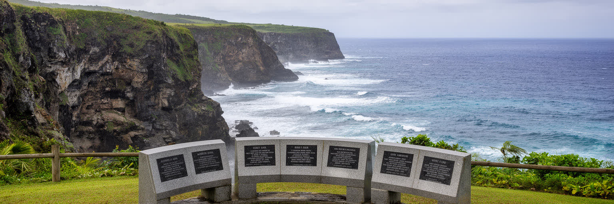
グアムの歴史には、スペインの植民地支配、米西戦争後の米国統治、日本軍占領、米軍による再占領、戦後の基地化が重なります。第二次世界大戦の記憶は、記念碑や博物館だけでなく、家族の語り、土地、墓地、村の地名に残ります。日本軍占領下での強制労働、暴力、避難、飢えの経験は、観光客が見る南国の景色とは別の層を作ります。解放記念日は米国への帰属を祝う日であると同時に、戦争で島民が背負った被害を思い出す日でもあります。戦後の軍用地拡大は安全保障と生活の境界を変え、先住民の土地問題を現在へ引き継ぎました。グアムの戦跡を訪れることは、太平洋戦争を大国同士の戦略だけでなく、島で暮らす人々の被害と選択として見ることです。記憶を丁寧に扱うことは、観光と教育の両方に必要です。日本から訪れる人にとって、グアムは近いリゾートであると同時に、日本軍占領の加害を学ぶ場所でもあります。米国から見れば解放の物語が強くなりますが、島民の視点では占領、暴力、土地喪失、戦後統治が一続きの経験になります。誰の言葉で歴史を語るかは、現在の尊厳に関わります。戦争記憶は過去を責めるためだけにあるのではなく、島を戦場にしない想像力を持つためにもあります。観光客、兵士、住民、子どもが同じ戦跡を見ても、受け取る意味は異なります。その違いを並べることが、記憶の公共性を育てます。
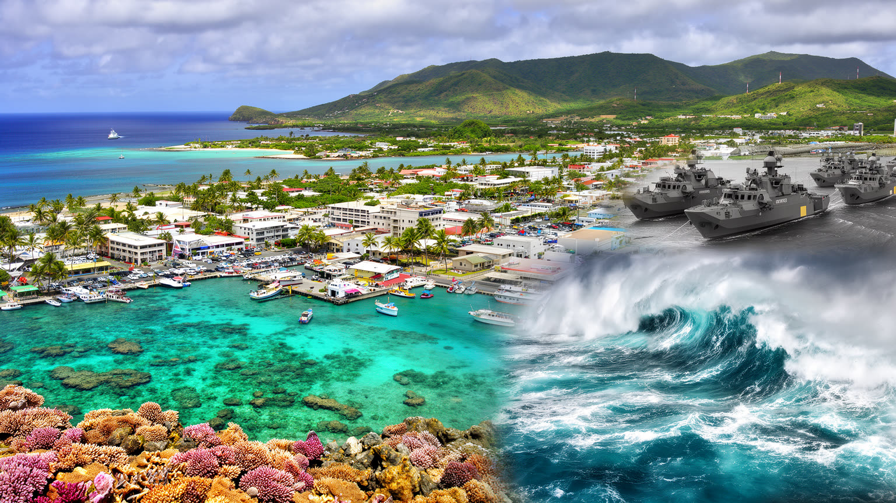
グアムは人口規模だけで見れば小さな島ですが、世界都市を読む視点では、植民地史、米国の準州制度、太平洋安全保障、観光、移民、気候リスク、先住民文化が凝縮された場所です。ニューヨークや東京のような巨大な金融都市ではなくても、ここには世界の力が直接降りてきます。軍事基地は国際政治を島の土地へ刻み、観光は東アジアの消費と航空網に左右され、台風と海面上昇は気候変動を生活の問題に変えます。チャモロ文化は、外から来る統治、宗教、言語、軍事、商品化に応答しながら続いてきました。グアムを読むとは、楽園のイメージを壊すことではありません。美しい海、家族の食卓、村の祭りを大切にしながら、その背後にある労働、土地、記憶、政治参加の条件を見ることです。小さな島ほど、世界の制度と日常生活の距離は近くなります。港に届く物資、空港に着く旅行者、基地の訓練、台風後の復旧、教会の鐘、村の食卓は、別々の出来事ではなく一つの島の時間割です。グアムの重要性は経済規模の大きさではなく、世界の不均衡がどれほど身近な生活に現れるかを示す点にあります。島を読む視点は、海の明るさと歴史の重さを同時に保つことから始まります。都市を広さや高層ビルで測る見方から離れると、グアムは海上交通、軍事、親族、観光、気候が密接に結びつく重要な生活圏として見えてきます。小ささは弱さだけでなく、変化がすぐ社会へ届く敏感さでもあります。